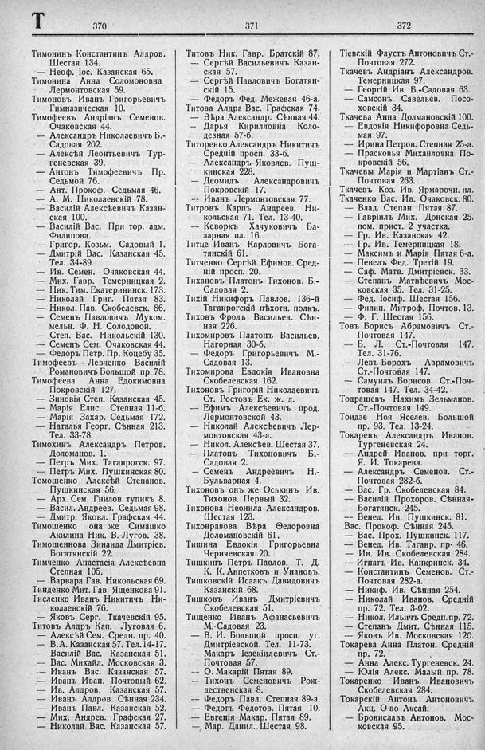

Лист источника 474
Скан

Распознанный текст
Т 370
Тимонинъ Константинъ Алдров.
Шестая 134.
— Неоф. Іос. Казанская 65.
Тимонина Анна Соломоновна
Лермонтовская 59.
Тимоновъ Иванъ Григорьевичъ
Гимназическая 10.
Тимоѳеевъ Андріанъ Семенов.
Очаковская 44.
— Александръ Николаевичъ Б.-
Садовая 202.
— Алексѣй Леонтьевичъ Тур-
геневская 39.
— Антонъ Тимоѳеевичъ Пр.
Седьмой 76.
— Ант. Прокоф. Седьмая 46.
— А. М. Николаевскій 78.
— Василій Алексѣевичъ Казан-
ская 100.
— Василій Вас. При тор. адм.
Филипова.
— Григор. Козьм. Садовый 1.
— Дмитрій Вас. Казанская 45.
Тел. 34-89.
— Ив. Семен. Очаковская 44.
— Мих. Гавр. Темерницкая 2.
— Ник. Тим. Екатерининск. 173.
— Николай Григ. Пятая 83.
— Никол. Пав. Скобелевск. 86.
— Семенъ Павловичъ Муком.
мельн. Ф. Н. Солодовой.
— Степ. Вас. Никольскій 130.
— Семенъ Сем. Очаковская 44.
— Федоръ Петр. Пр. Коцебу 35.
Тимоѳеевъ-Левченко Василій
Романовичъ Большой пр. 78.
Тимоѳеева Анна Едокимовна
Покровскій 127.
— Зиновія Степ. Казанская 45.
— Марія Елис. Степная 11-б.
— Марія Захар. Седьмая 172.
— Наталья Георг. Сѣнная 213.
Тел. 33-78.
Тимохинъ Александръ Петров.
Доломанов. 1.
— Петръ Мих. Таганрогск. 97.
— Петръ Мих. Пушкинская 80.
Томошенко Алексѣй Степанов.
Пушкинская 56.
— Арх. Сем. Гнилов. тупикъ 8.
— Васил. Андреев. Седьмая 98.
— Дмитр. Яковл. Графская 44.
Тимошенко она же Симашко
Акилина Ник. В.-Лугов. 38.
Тимошеннова Зинаида Дмитріев.
Богатянскій 22.
Тимченко Анастасія Алексѣевна
Степная 105.
— Варвара Гав. Никольская 69.
Тинденко Мит. Гав. Яшенкова 91.
Тисленко Иванъ Никитичъ Ни-
колаевскій 76.
— Яковъ Серг. Ткачевскій 95.
Титовъ Алдръ Кап. Луговая 6.
— Алексѣй Сем. Средн. пр. 40.
— В. А. Казанская 57. Тел. 14-17.
— Василій Вас. Казанская 51.
— Вас. Михайл. Московская 3.
— Иванъ Вас. Казанская 57.
— Иванъ Иван. Почтовый 62.
— Ив. Алдров. Казанская 57.
— Иванъ Алдров. Сѣнная 234.
— Иванъ Павл. Казанская 52.
— Мих. Андрев. Графская 27.
— Николай Вас. Казанская 57.
371
Титовъ Ник. Гавр. Братскій 87.
— Сергѣй Васильевичъ Казан-
ская 57.
— Сергѣй Павловичъ Богатян-
скій 15.
— Федоръ Фед. Межевая 46-а.
Титова Алдра Вас. Графская 74.
— Вѣра Александр. Сѣнная 44.
— Дарья Кирилловна Коло-
дезная 57-б.
Титоренко Александръ Никитичъ
Средній просп. 33-б.
— Александръ Яковлев. Пуш-
кинская 228.
— Деомидъ Александровичъ
Покровскій 17.
— Иванъ Лермонтовская 77.
Титровъ Карпъ Андреев. Ни-
кольская 71. Тел. 13-40.
— Кеворкъ Хачуковичъ Ба-
зарная пл. 16.
Титце Иванъ Карловичъ Бога-
тянскій 61.
Титченко Сергѣй Ефимов. Сред-
ній просп. 20.
Тихановъ Платонъ Тихонов. Б.-
Садовая 2.
Тихій Никифоръ Павлов. 136-й
Таганрогскій пѣхотн. полкъ.
Тиховъ Фролъ Васильев. Сѣн-
ная 226.
Тихомировъ Платонъ Васильев.
Нагорная 30-б.
— Федоръ Григорьевичъ М.-
Садовая 13.
Тихомирова Евдокія Ивановна
Скобелевская 162.
Тихоновъ Григорій Николаевичъ
Ст. Ростовъ Ек. ж. д.
— Ефимъ Алексѣевичъ прод.
Лермонтовской 43.
— Николай Алексѣевичъ Лер-
монтовская 43-а.
— Никол. Алексѣев. Шестая 37.
— Платонъ Тихоновичъ Б.-
Садовая 2.
— Семенъ Андреевичъ Н.-
Бульварная 4.
Тихоновъ онъ же Оськинъ Ив.
Тихонов. Первый 32.
Тихонова Неонила Александров.
Шестая 123.
Тихонравова Вѣра Ѳеодоровна
Доломановскій 61.
Тишина Евдокія Григорьевна
Черняевская 20.
Тишкинъ Петръ Павлов. Т. Д.
К. К. Аппетковъ и Унановъ.
Тишковскій Исаакъ Давидовичъ
Казанскій 68.
Тишковъ Иванъ Дмитріевичъ
Скобелевская 51.
Тищенко Иванъ Афанасьевичъ
М.-Садовая 23.
— В. И. Большой просп. уг.
Дмитріевской. Тел. 11-73.
— Макаръ Іезекіилевичъ Ст.-
Почтовая 57.
— О. Макарій Пятая 89.
— Тихонъ Семеновичъ Рож-
дественская 8.
— Федоръ Павл. Степная 89-а.
— Федотъ Федотов. Пятая 10.
— Евгенія Макар. Пятая 89.
— Мар. Данил. Шестая 98.
372
Тіевскій Фаустъ Антоновичъ Ст.-
Почтовая 272.
Ткачевъ Андріанъ Александров.
Темерницкая 97.
— Георгій Ив. Б.-Садовая 63.
— Самсонъ Савельев. Посо-
ховскій 34.
Ткачева Анна Долмановскій 100.
— Евдокія Никифоровна Седь-
мая 97.
— Ирина Петров. Степная 25-а.
— Прасковья Михайловна По-
кровскій 56.
Ткачевы Марія и Мартіанъ Ст.-
Почтовая 263.
Ткачевъ Коз. Ив. Ярмарочн. пл.
Ткаченко Вас. Ив. Очаковск. 80.
— Влад. Степан. Пятая 87.
— Гавріилъ Мих. Донская 25.
пом. прист. 2 участка.
— Гр. Ив. Казанская 42.
— Гр. Ив. Темерницкая 18.
— Максимъ и Марія Пятая 6-а.
— Певелъ Фед. Третій 19.
— Саф. Матв. Дмитріевск. 33.
— Степанъ Матвѣевичъ Мос-
ковская 35. Тел. 31-25.
— Фед. Іосиф. Шестая 156.
— Филип. Митроф. Почтов. 13.
— Ф. Г. Шестая 156.
Товъ Борисъ Абрамовичъ Ст.-
Почтовая 147.
— Б. Л. Ст.-Почтовая 147.
Тел. 31-76.
— Левъ-Борохъ Аврамовичъ
Ст.-Почтовая 147.
— Самуилъ Борисов. Ст.-Поч-
товая 147. Тел. 34-42.
Тодрашевъ Нахимъ Зельманов.
Ст.-Почтовая 149.
Тоидзе Ноя Яселев. Большой
пр. 93. Тел. 13-24.
Токаревъ Александръ Иванов.
Тургеневская 24.
— Андрей Иванов. при торг.
Я. И. Токарева.
— Александръ Семенов. Ст.-
Почтовая 282-б.
— Вас. Гр. Скобелевская 84.
— Василій Прохоров. Сѣнная-
Богатянск. 245.
— Венед. Ив. Пушкинск. 81.
Вас. Прокоф. Сѣнная 245.
— Вас. Прох. Пушкинск. 117.
— Венед. Ив. Таганр. пр. 46.
— Ив. Ив. Скобелевская 284.
— Игнатъ Ив. Канкринск. 34.
— Константинъ Семенов. Ст.-
Почтовая 282-а.
— Никиф. Ив. Сѣнная 254.
— Николай Иванов. Средній
пр. 72. Тел. 3-02.
— Никол. Ильичъ Средн. пр. 72.
— Степанъ Дмит. Сѣнная 115.
— Яковъ Ив. Московская 120.
Токарева Анна Платон. Средній
пр. 72.
— Анна Алекс. Тургеневск. 24.
— Юлія Алекс. Малый пр. 78.
Токаренко Иванъ Ивановичъ
Скобелевская 284.
Токарскій Антонъ Антоновичъ
Акц. О-во Аксай.
— Брониславъ Антонов. Мос-
ковская 95.